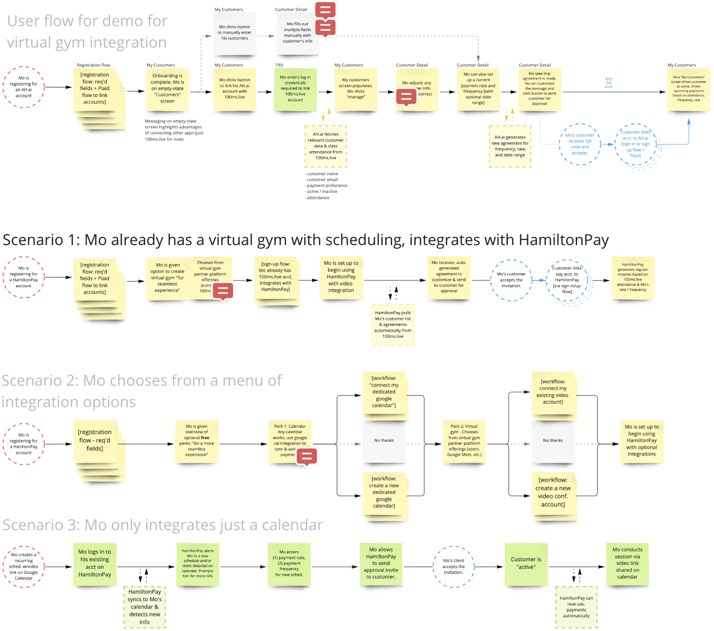

HamiltonPay
Online payment platform for micro-entrepreneurs

Enabling faster, safer, cheaper transactions
HamiltonPay is an improved payment collection platform that embraces smart contracts to minimize fraud, labor, and human error costs. These costs disproportionately affect micro-entrepreneurs who sell goods and services.
I designed user-friendly payment flows, dashboards, and integration flows for six high-fidelity, functioning product demos, attracting a range of early adopters and investors.
My Contributions
Designed custom variations of a product
I worked closely with the development team to understand the back-end well enough to design landing pages, dashboard views, and key user flows specific to:
- Individual fitness trainers, and their students / customers
- Independent health practitioners, and their patients
- Micro entrepreneurs, and their buyers / customers
- Web developers building sites using HamiltonPay’s API


The customer-side interface was tricky. These were end-users who hadn’t chosen to pay using the app. To communicate trust, I crafted transparent explanations. To balance trust and ease of use, I paired every automated step with a manual option.

Explored UI for tie-in of third-party integrations
Tying in third-party integrations often leads to confusion as the end-user moves between different environments. The developers wanted to use them as hold-overs until they could be built in-house. I explored how integrations could initially plug in seamlessly to user flows for initial demos and validation for future scope.
Established a preliminary design system
Using Tailwind UI’s Figma components, I semi-customized and managed the design system. The resulting layouts were essentially wireframes with the appearance of finished products, built at speed. This allowed me to user-test flows without linking together pixel-perfect prototype screens, before nailing down a final design.

Takeaways
Our solutions needed to share a central structure, while addressing each group's unique needs. For that reason, much of my focus was on diagrams of user flows, which helped to identify shared functions versus distinct feature sets.
- A developer-created admin view was a great starting point understand what info is really needed to request from an end-user to accomplish a task.
- I needed to consistently emphasize product usability to remind the team how UX design is foundational to the products, not simply a cosmetic top-coat.
- It was a chance to wear many hats: I served as copy editor, contributed to marketing material, and did the voiceovers for demo videos.
HamiltonPay
Himangshu Hazarika, CEO
Rakesh Kumar, CPO
User Experience
Nilpa Jhaveri, UX Designer
Development
Roman Chvanikov, VP Platform
Ping Zhao, Front-end Engineer